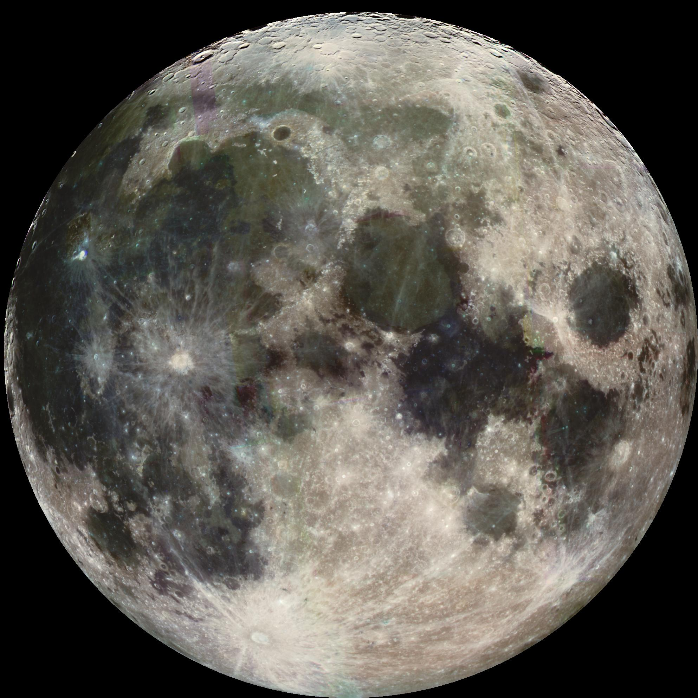

The moon
The Moon is in synchronous rotation with Earth, always showing the same face with its near side marked by dark volcanic maria that fill between the bright ancient crustal highlands and the prominent impact craters. It is the second-brightest regularly visible celestial object in Earth's sky (after the Sun), as measured by illuminance on the surface of Earth. Although it can appear a very bright white, its surface is actually dark, with a reflectance just slightly higher than that of worn asphalt. Its prominence in the sky and its regular cycle of phases have, since ancient times, made the Moon an important cultural influence on language, calendars, art, and mythology. The Moon's gravitational influence produces the ocean tides and the slight lengthening of the day. The Moon's current orbital distance is about thirty times the diameter of Earth, causing it to have an apparent size in the sky almost the same as that of the Sun. This allows the Moon to cover the Sun nearly precisely in total solar eclipse. This matching of apparent visual size is a coincidence. The Moon's linear distance from Earth is currently increasing at a rate of 3.82±0.07 cm per year, but this rate is not constant.
